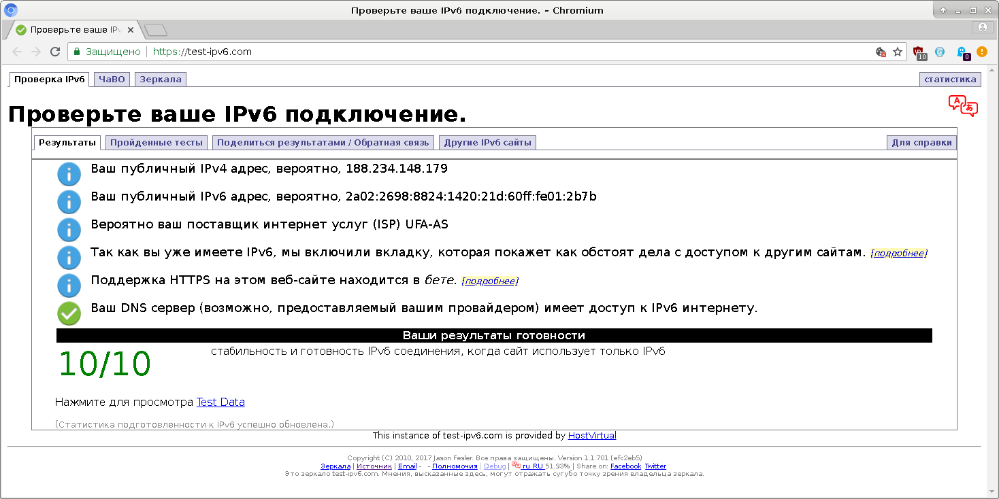
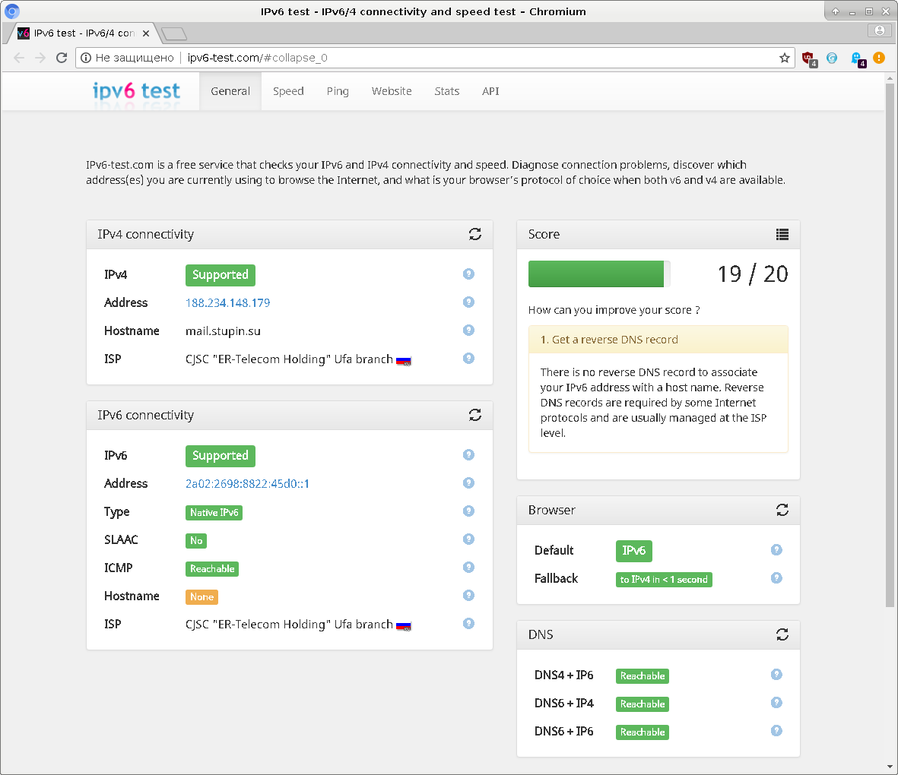

До сих пор мне приходилось лишь отключать поддержку IPv6 на компьютерах, т.к. она скорее создавала дополнительные риски для безопасности системы, чем приносила какую-то практическую пользу. Напомню, что для отключения IPv6 на уровне операционной системы нужно выполнить команду:
# sysctl -w net.ipv6.conf.all.disable_ipv6=1
Чтобы поддержка IPv6 не включалась при перезагрузке системы, нужно прописать в файл /etc/sysctl.conf такую строчку:
net.ipv6.conf.all.disable_ipv6=1
При этом интерфейсам не будут присваиваться адреса IPv6, однако различные сетевые демоны по-прежнему будут готовы обслужить запрос, поступивший через стек IPv6. Чтобы полностью отключить весь стек IPv6, нужно в файле /etc/default/grub добавить в переменную GRUB_CMDLINE_LINUX опцию, которая сообщит ядру о необходимости отключить весь стек IPv6:
GRUB_CMDLINE_LINUX="ipv6.disable=1"
После этого нужно обновить файлы конфигурации загрузчика GRUB при помощи следующей команды:
# update-grub
И перезагрузить систему.
Однако, недавно в личном кабинете Дом.ru моё внимание привлёк переключатель поддержки IPv6. Нельзя сказать, что в IPv6 и сейчас есть много пользы, однако поддержка IPv6 со стороны провайдера побудила меня изучить вопрос. Я достал с полки когда-то купленную книжку IPv6. Администрирование сетей и стал почитывать вечерами.
Надо сказать, что принципы организации IPv6 значительно отличаются от принципов организации ныне используемого протокола IPv4. Это не просто новая версия IPv4 с увеличенной длинной поля IP-адреса. Разработчики протокола подошли к задаче основательно, пытаясь решить множество проблем, накопившихся в IPv4. На мой взгляд, IPv6 напоминает чем-то гибрид IPv4 и IPX.
С точки зрения сетевого администратора, работающего в компании-провайдере, IPv6 в целом отличается от IPv4 довольно мало. Провайдер обращается к региональному регистратору для получения блока IPv6-адресов. Регистраторы выдают провайдерам блоки с префиксами /32 из адресного пространства 2000::/3 - это «белые» IPv6-адреса.
Следующие 32 бита - это номера сетей внутри блока. Провайдерам настоятельно рекомендуется анонсировать по протоколу BGP префиксы не длиннее /48, чтобы глобальные таблицы маршрутов не разрослись сверх меры. Клиентам рекомендуется выдавать префиксы сетей с маской /56. Это значит, что из 32 бит 24 бита остаются в распоряжении провайдера, а следующие 8 бит клиент может использовать по своему усмотрению. То есть провайдер может раздать по 256 сетей каждому из максимум 16 миллионов (2^24) клиентов, имея всего один блок /32. При этом у клиента остаётся возможность организовать адресное пространство таким образом, чтобы выделить каждому из филиалов по несколько сетей для различных нужд. Например, 16 филиалам по 16 сетей, или 64 филиалам по 4 сети.
Наконец, оставшиеся 64 бита используются в качестве идентификатора интерфейса сетевого устройства внутри одной сети. Одна сеть может содержать столько устройств, сколько необходимо. Для формирования идентификатора интерфейса используются идентификаторы EUI-64. Идентификатор EUI-64 получается из MAC-адреса следующим образом:
Для сетевого администратора есть несколько интересных отличий IPv6 от IPv4.
Во-первых, в IPv6 встроены функции автоконфигурации сетевых интерфейсов. Каждый интерфейс назначает себе IPv6-адрес с префиксом fe80::/10, который не подлежит маршрутизации. Эти автоконфигурируемые IPv6-адреса используются для общения с маршрутизаторами и соседями по сети. Благодаря этому минимальная связность сети обеспечивается автоматически, а протоколы конфигурирования значительно упрощаются.
Во-вторых, т.к. автоконфигурирование обеспечивает минимальную связность сети, упрощаются протоколы обнаружения соседей и более полного автоконфигурирования. В IPv6 функции ARP и частично DHCP включены в протокол ICMPv6. Вместо ARP в ICMPv6 встроен протокол обнаружения соседей NDP - Neighbor Discovery Protocol. Вместо DHCP для получения маршрутов используется функция ICMPv6 под названием RA - Router Advertisement. Для получения адресов DNS-серверов и доменного суффикса по умолчанию в ICMPv6 существуют аналогичные функции RDNSS - Recursive DNS Servers и DNSSL - DNS Search List. Для более сложных случаев можно использовать DHCPv6, роль которого в IPv6 значительно снизилась - он используется для получения узлами различных настроек, таких как списки DNS или NTP-серверов, но не используется для конфигурирования адресов интерфейсов или раздачи информации о маршрутах.
В-третьих, IPv6 не использует широковещательные рассылки, а усиленно использует мультикаст-адресацию. Например, в протоколе NDP, чтобы узнать MAC-адреса устройства в сети, запрос отправляется на мультикаст-адрес, сформированный из части IPv6-адреса искомого устройства. Т.к. коммутаторам необходимо помнить, какие из портов относятся к каждому мультикаст-адресу, увеличиваются требования к максимальному объёму таблицы коммутации, но при этом снижается паразитная нагрузка на каналы связи, коммутаторы и конечные узлы, возникавшая из-за необходимости рассылать широковещательные пакеты. В IPv6 отпадает всякий смысл в делении крупных сетей на мелкие широковещательные домены. Остаётся осмысленным только выделение сети по организационным соображениям или из соображений безопасности. Например, можно выделять по отдельной сети для филиалов компании, или по сети для VoIP-шлюзов в филиале, с целью ограничить доступ к сети VoIP-шлюзов на маршрутизаторах, вне зависимости от количества оборудования в этой сети. В одной сети, благодаря использованию мультикаст-рассылок, могут уживаться хоть миллионы устройств - лишь бы коммутаторам хватало объёма таблицы коммутации.
Теперь можно перейти к практике.
Перед тем, как настраивать IPv6, сначала нужно настроить PPPoE-подключение с использованием IPv4. Сделать это можно одной из моих прошлых статей: Настройка PPPoE-подключения к ЭР-Телеком/Дом.ru (Уфанет, Башинформсвязь).
Добавим в файл /etc/ppp/peers/ertelecom одну дополнительную опцию:
+ipv6
Можно попробовать переустановить PPPoE-подключение:
# ifdown ertelecom # ifup ertelecom
После переустановки подключения на интерфейсе ppp0 можно будет увидеть IPv6-адрес. Посмотрим его при помощи такой команды:
# ip addr show ppp0
Однако, этот IPv6-адрес начинается с префикса fe80::/10, который аналогичен IPv4-адресам из сети 169.254.0.0/16. Это самоконфигурируемые IPv6-адреса, которые действуют только в пределах одного сегмента сети и не маршрутизируются в другие сегменты. В случае с Ethernet-интерфейсами самоконфигурируемый адрес назначается следующим образом:
Идентификатор EUI-64 получается из MAC-адреса следующим образом:
В случае с PPP-подключениями не существует MAC-адреса, из которого можно было бы сгенерировать младшие 64 бита адреса, поэтому стороны генерируют случайные идентификаторы и согласовывают их друг с другом: соглашаются на предложенные идентификаторы или отказываются, предлагая другие. Именно такие адреса и были настроены на интерфейсе ppp0.
Для получения «белого» префикса потребуется установить и настроить клиент DHCPv6, который запросит через интерфейс ppp0 префикс IPv6 и настроит его на Ethernet-интерфейсе. Я пробовал сначала воспользоваться демоном dhcpcd5, однако он не желал настраивать Ethernet-интерфейсы, для которых в файле /etc/network/interfaces не указан метод настройки dhcp:
Sep 11 22:39:19 stupin systemd[1]: Starting LSB: IPv4 DHCP client with IPv4LL support... Sep 11 22:39:19 stupin dhcpcd[30762]: Not running dhcpcd because /etc/network/interfaces ... failed! Sep 11 22:39:19 stupin dhcpcd[30762]: defines some interfaces that will use a DHCP client ... failed! Sep 11 22:39:19 stupin systemd[1]: Started LSB: IPv4 DHCP client with IPv4LL support.
Я попытался включить настройку интерфейса по DHCPv6, вписав в файл /etc/network/interfaces следующие настройки:
iface eth0 inet6 dhcp request_prefix 1
Однако даже с такими настройками dhcpcd5 запускаться отказывался. Поэтому я решил попробовать другой DHCP-клиент, которым оказался клиент из проекта WIDE-DHCPv6.
Установим DHCPv6-клиент:
# apt-get install wide-dhcpv6-client
Пропишем настройки DHCPv6-клиента в файле /etc/wide-dhcpv6/dhcp6c.conf:
interface ppp0 {
send ia-pd 0;
};
id-assoc pd 0 {
prefix-interface eth0 {
sla-len 0;
ifid 1;
};
};
Пропишем в файле /etc/default/wide-dhcpv6-client список интерфейсов, через которые DHCPv6-клиент должен запрашивать настройки:
INTERFACES="ppp0"
Включим автозапуск wide-dhcp6-client при загрузке системы и перезапустим его, чтобы новые настройки вступили в силу:
# systemctl enable wide-dhcpv6-client # systemctl restart wide-dhcpv6-client
Теперь DHCPv6-клиент получает через интерфейс ppp0 префикс вида 2a02:2698:882X:XXXX::/64 и настраивает на интерфейсе eth0 «белый» IPv6-адрес с использованием этого префикса. Что характерно, выдаваемый IPv6-префикс - динамический, т.к. при каждом переподключении выдаётся другой.
В рецепте настройки DHCPv6-клиента написано, что для корректного удаления IPv6-адреса с Ethernet-интерфейса нужно соорудить дополнительные «костыли» в файлах /etc/ppp/ipv6-up.d/20-wide-client-start и /etc/ppp/ipv6-down.d/20-wide-client-stop. Я, однако, «костыли» немного преобразовал, чтобы при отключении PPPoE останавливался только тот экземпляр клиента DHCPv6, который получает настройки через подключение PPPoE.
Также при установке подключения нужно присвоить sysctl-переменной net.ipv6.conf.ppp0.accept_ra значение 2, чтобы система добавляла в таблицу маршрутизации IPv6-маршруты, анонсированные провайдером через интерфейс PPPoE. Присваивать это значение нужно именно через эти скрипты, т.к. интерфейс ppp0 появляется только после установки подключения и по умолчанию значение sysctl-переменной net.ipv6.conf.ppp0.accept_ra равно единице - система принимает анонсы маршрутов, но не добавляет их в таблицу маршрутизации.
В результате мои «костыли» приняли несколько другой вид. Содержимое файла /etc/ppp/ipv6-up.d/route:
#!/bin/sh
case "$PPP_IPPARAM" in
ertelecom)
sysctl -w net.ipv6.conf.$PPP_IFACE.accept_ra=2
dhcp6ctl -C start interface $PPP_IFACE
;;
*)
echo "No PPP_IPPARAM defined"
;;
esac
Содержимое файла /etc/ppp/ipv6-down.d/route:
#!/bin/sh
case "$PPP_IPPARAM" in
ertelecom)
dhcp6ctl -C stop interface $PPP_IFACE
;;
*)
echo "No PPP_IPPARAM defined"
;;
esac
На обоих файлах нужно выставить бит исполнимости:
# chmod +x /etc/ppp/ipv6-up.d/route # chmod +x /etc/ppp/ipv6-down.d/route
Хотя пока мало кто пользуется IPv6, всё же не стоит выставлять свой компьютер в «дикий» интернет, не прикрыв его пакетным фильтром. Базовая настройка пакетного фильтра такова:
# ip6tables -A INPUT -i lo -j ACCEPT # ip6tables -A INPUT -m conntrack --ctstate RELATED,ESTABLISHED -j ACCEPT # ip6tables -A INPUT -p icmpv6 -m icmpv6 ! --icmpv6-type redirect -j ACCEPT # ip6tables -A INPUT -i ppp0 -p udp -m udp -s fe80::/10 --sport 547 --dport 546 -j ACCEPT # ip6tables -A INPUT DROP
В настроенных выше правилах пакетного фильтра разрешается:
Сохраним настроенные правила фильтрации пакетов IPv6 в файл /etc/network/ip6tables:
# ip6tables-save > /etc/network/ip6tables
И пропишем их автоматическую загрузку в файл /etc/network/interfaces при поднятии локального петлевого интерфейса:
auto lo iface lo inet loopback pre-up iptables-restore < /etc/network/iptables pre-up ip6tables-restore < /etc/network/ip6tables
В одной из моих прошлых заметок описана Настройка кэширующего DNS-сервера BIND в связке с openresolv. Т.к. я продолжаю использовать эту связку, мне нужно приспособить её для работы с IPv6.
Первым делом нужно включить обслуживание запросов на IPv6-адресах в bind9. Для этого открываем файл /etc/bind/named.conf.options и вписываем опцию для прослушивания всех IPv6-адресов компьютера:
listen-on-v6 { any; };
Чтобы bind9 отвечал на запросы с IPv6-адреса ::1 - аналога IPv4-адреса 127.0.0.1, нужно добавить этот адрес в список адресов, которые могут выполнять рекурсивные запросы. В моём случае список адресов, которым разрешается выполнять рекурсивные запросы к DNS-серверу, выглядит следующим образом:
allow-recursion { 127.0.0.1; 169.254.253.0/24; 169.254.254.0/24; ::1; };
Осталось перезапустить bind9, чтобы он начал принимать запросы на IPv6-адресах:
# systemctl restart bind9
Теперь нужно настроить openresolv так, чтобы он прописывал в файл /etc/resolv.conf IPv6-адрес DNS-сервера - ::1. Для этого открываем на редактирование файл /etc/resolvconf.conf и приводим опцию name_servers к следующему виду:
name_servers="127.0.0.1 ::1"
Осталось обновить файл /etc/resolv.conf в соответствии с новыми настройками openresolv. Сделать это можно при помощи следующей команды:
# resolvconf -u
Проверим правильность настройки IPv6, открыв веб-страницу для тестирования IPv6 - Проверьте ваше IPv6 подключение. Результат проверки в моём случае выглядел следующим образом:
Ещё один тест IPv6, более подробный и требовательный - IPv6 test - IPv6/4 connectivity and speed test. Результат этой проверки оказался следующим:
К сожалению, настроить PTR-запись для IPv6-адреса может только провайдер, но нельзя настроить PTR-запись для IPv6-адреса, префикс которого провайдер выдаёт каждый раз разный. Я задавал вопрос в техподдержку ЭР-Телекома о том, возможно ли выдавать один и тот же «статический» префикс IPv6 подобно тому, как это организовано в случае «статического» адреса IPv4. Мне ответили, что такой возможности в настоящее время у них нет. Поэтому в этом тесте мне удалось добиться максимально возможного количества баллов - 19 из 20. Для получения 20 баллов уже потребуются телодвижения со стороны провайдера.
Провайдер выдал нам «белый» префикс IPv6 с маской /64, а это значит, что у нас имеется целая сеть, IPv6-адреса из которой мы можем раздавать своим устройствам. Даже самое крупное предприятие с сотнями тысяч компьютеров может уместиться в одной такой сети, выдав каждому сетевому узлу по одному адресу IPv6. Нет никакой необходимости использовать NAT, а задача защиты устройств от «дикого» интернета решается фильтрацией пакетов. У крупных предприятий может возникнуть потребность в получении от провайдера более коротких префиксов лишь при необходимости логически организовать свою сеть: выделить отдельные сети своим подразделениям (например, филиалам в разных городах), а в подразделениях - выделить отдельные подсети для разных целей (например, отдельная сеть для компьютеров сотрудников, отдельная - для голосовых шлюзов и т.д).
Я лично столкнулся с необходимостью иметь хотя бы две сети. Одну из них я хотел бы использовать на Ethernet-интерфейсе, а другую - на WiFi-интерфейсе. Вообще, RFC6177 рекомендует выдавать клиентам префиксы длиной от /48 до /56, но провайдер не следует рекомендациям, жадничает и выдаёт префиксы /64. Сначала я попробовал запросить у провайдера сразу два префикса, изменив файл конфигурации /etc/wide-dhcpv6-client/dhcp6c.conf следующим образом:
interface ppp0 {
send ia-pd 0;
send ia-pd 1;
};
id-assoc pd 0 {
prefix-interface eth0 {
sla-len 0;
ifid 1;
};
};
id-assoc pd 1 {
prefix-interface wlan0 {
sla-len 0;
ifid 1;
};
};
Но в ответ на такой трюк DHCPv6-сервер провайдера просто перестал отвечать на мои запросы. Пробовал воспользоваться NDP-прокси ndppd - аналогом ARP-прокси для IPv6 и демоном ndprbrd. Вместе они должны были перехватывать NDP-запросы, транслировать их на другой интерфейс, а при получении ответа добавлять маршрут к обнаруженному соседу через конкретный интерфейс. Но по не понятным мне причинам этот вариант тоже не взлетел. Остаётся только ждать и надеяться, что в ЭР-Телекоме когда-нибудь реализуют делегирование префиксов короче /64. Даже /60, позволяющей выделить 16 сетей /64 мне для дома хватило бы с головой.
Поскольку на Ethernet-интерфейсе у меня нет оборудования, имеющего полноценную поддержку IPv6, но есть нотубук с Debian, который может подключаться к WiFi-сети, то я решил повесить эту сеть на интерфейс wlan0.
Т.к. на моём компьютере установлен DNS-сервер, я решил в анонсах RA раздавать его адрес. Правда, поскольку выдаваемый провайдером IPv6-префикс - динамический, придётся воспользоваться локальными самосконфигурированными на интерфейсах IPv6-адресами. Первым делом разрешим DNS-серверу обслуживать запросы на локальных адресах. Для этого откроем в текстовом редакторе файл /etc/bind/named.conf.options и отредактируем список адресов, для которых будут обслуживаться рекурсивные запросы. В этот список я добавил сеть fe08::/10:
allow-recursion { 127.0.0.1; 169.254.253.0/24; 169.254.254.0/24; ::1; fe08::/10; };
Это не очень хорошо, т.к. провайдер тоже сможет через PPPoE-подключение обращаться с рекурсивными запросами к моему DNS-серверу. Педант в моей душе немного негодует, однако сумел договориться с практиком, который не нашёл других выходов из этой ситуации. Сообщим DNS-серверу об изменившихся настройках:
# systemctl reload bind9
Для того, чтобы раздавать IPv6-адреса из выделенной нам сети, установим и настроим демона radvd - Router ADVertisement Daemon - демона объявления маршрутизатора. Установим одноимённый пакет:
# apt-get install radvd
Создадим файл /etc/radvd.conf со следующим содержимым:
interface wlan0
{
AdvSendAdvert on;
MaxRtrAdvInterval 60;
prefix ::/64
{
AdvValidLifetime 600;
AdvPreferredLifetime 120;
};
RDNSS fe80::c24a:ff:fe9f:89fc {};
DNSSL stupin.su {};
};
Включим и запустим демона:
# systemctl enable radvd # systemctl start radvd
Теперь устройства в локальной сети могут запрашивать префикс у нашего компьютера. Если на компьютере настроена фильтрация пакетов, то для того, чтобы клиенты смогли обращаться к radvd, нужно разрешить входящие UDP-пакеты на порт 58:
# ip6tables -A INPUT -i eth0 -p udp -m udp --dport 58 -j ACCEPT
Если устройства в локальной сети должны иметь доступ к DNS-серверу, то нужна пара правил, полностью аналогичных таковым для IPv4:
# ip6tables -A INPUT -p udp -m udp --dport 53 -j ACCEPT # ip6tables -A INPUT -p tcp -m tcp --dport 53 -j ACCEPT
Чтобы разрешить пропускать трафик из локальной сети во внешнюю сеть, нужно при помощи команды sysctl выставить несколько настроек:
# sysctl -w net.ipv6.conf.all.forwarding=1 # sysctl -w net.ipv6.conf.default.forwarding=1
Чтобы эти настройки применялись автоматически при перезагрузке компьютера, нужно вписать их в файл /etc/sysctl.conf:
net.ipv6.conf.all.forwarding=1 net.ipv6.conf.default.forwarding=1
Если на компьютере настроена фильтрация пакетов, можно разрешить движение трафика между локальным и внешним интерфейсами. Например, я разрешил только движение пакетов ICMPv6:
# ip6tables -A FORWARD -m conntrack --ctstate RELATED,ESTABLISHED -j ACCEPT # ip6tables -A FORWARD -p icmpv6 -m icmpv6 ! --icmpv6-type redirect -j ACCEPT # ip6tables -P FORWARD DROP
Ноутбуку, который будет подключаться к сети, кое-что всё-таки разрешим:
# ip6tables -A FORWARD -i wlan0 -p tcp -m multiport --dports 21,22,25,43,80,110,143,443,587,993,995,5222,5223 -j ACCEPT
После изменения настроек фильтрации пакетов не забудьте записать их:
# ip6tables-save > /etc/network/ip6tables
Теперь настала очередь настройки системы на ноутбуке. Во-первых, поставим rdnssd для получения адресов DNS-серверов:
# apt-get install rdnssd
Включим и запустим его:
# systemctl enable rdnssd # systemctl start rdnssd
Для правильной работы rndssd понадобится также пакет resolvconf. Если он ещё не установлен в системе, нужно его поставить:
# apt-get install resolvconf
Теперь пропишем в файле /etc/network/interfaces, как нужно настраивать IPv6 на интерфейсе wlan0:
iface wlan0 inet6 auto privext 2
Т.к. к префиксу, полученному через RA, добавляется идентификатор интерфейса, полученный из MAC-адреса компьютера, то MAC-адрес служит отличным идентификатором, по которому можно отслеживать интернет-активность конкретного устройства. Этот идентификатор остаётся постоянным даже при смене провайдера. Опция privext включает генерацию случайного идентификатора интерфейса, а также приоритетное использование IPv6-адреса, полученного из этого идентификатора. Таким крупным компаниям как Google это нисколько не помешает отслеживать активность устройства, но и облегчать задачу всем подряд тоже не стоит.
Осталось отключиться от WiFi-сети и снова подключиться к ней и проверить доступность IPv6-ресурсов с ноутбука:
# ifdown wlan0 # ifup wlan0
Заходим на указанные выше ресурсы для тестирования IPv6 и любуемся результатами. В этом случае по второй ссылке удалось набрать лишь 17 баллов, т.к. ICMPv6-запросы были слишком медленными и не успевали отрабатывать за отведённое время.